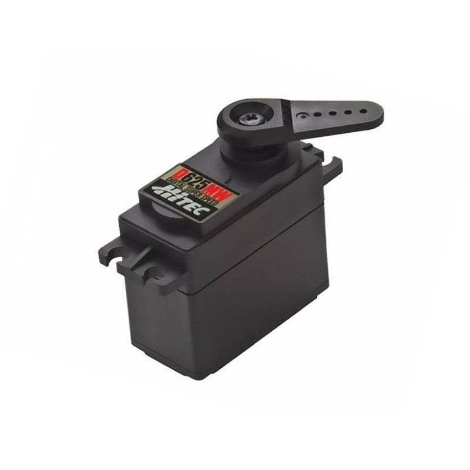
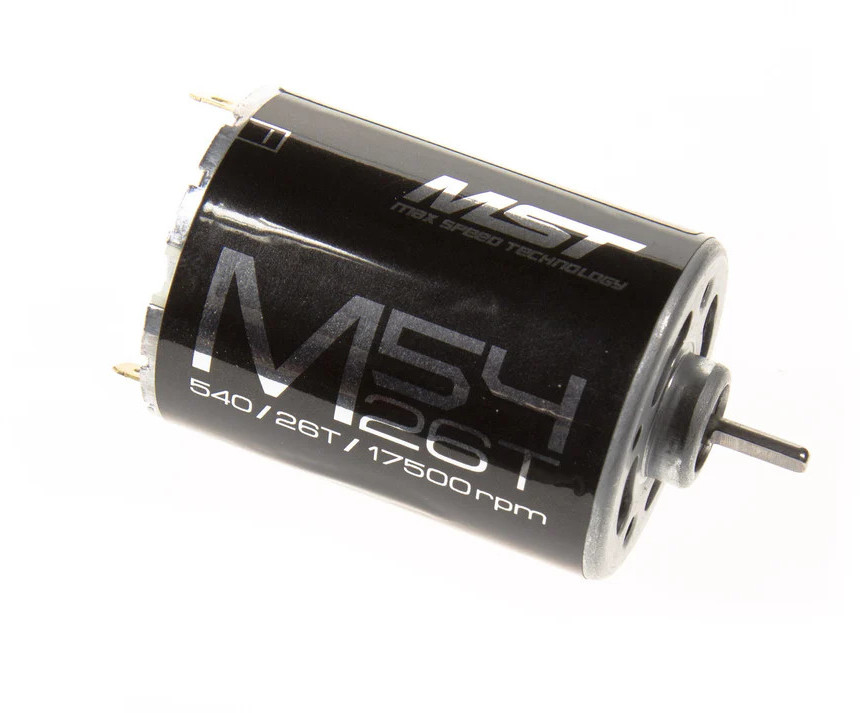
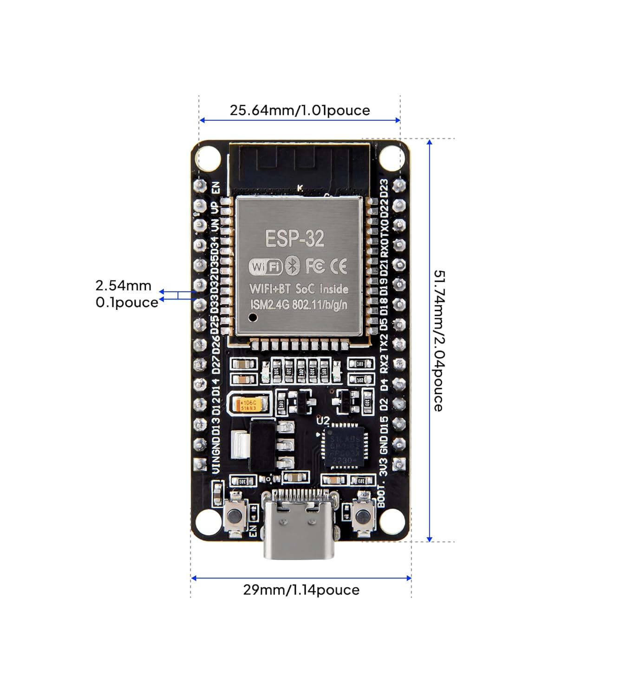
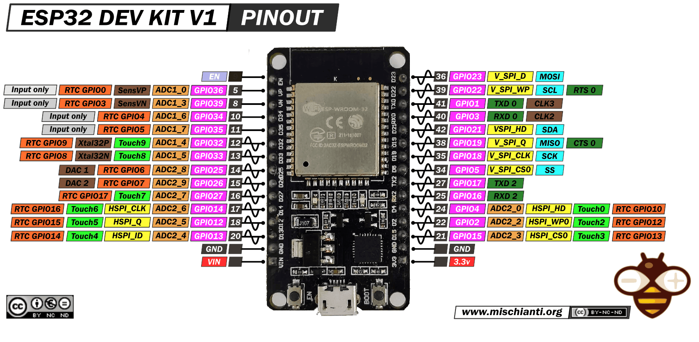

Dans la version initiale, le servo moteur était un KONECT 0913 LVMG 55G/9KG qui nécessitait une alimentation en 5V. Afin d'éviter un transformateur, il a été remplacé par un servo qui accepte directement la tension de la batterie 7,2 V.

Les servos ultra-rapides HS D-625MW HITEC D-Series offrent la plus haute résolution sur le marché aujourd'hui. Les meilleures possibilités de réponse et de programmation sont réalisées grâce au MCU 32 bits et à la technologie ADC 12 bits.La série 'D' regroupe les servos HITEC fonctionnant aussi bien en tension classique (4,8/6V) que HV (8,4V). Vous pourrez donc l'alimenter comme vous le souhaitez.Le servo numérique HS-625MW Digital est entièrement programmable et offre une bonne durabilité grâce à ses robustes engrenages en acier complets et à deux roulements à billes sur l'arbre de sortie, ce qui convient particulièrement lorsque le jeu faible et la haute précision de positionnement sont importants.La longue durée de vie et la transmission conçue de manière unique en font l'un des servos les plus fiables et les plus efficaces du marché.
Caractéristiques :
- Largeur: 20 mm
- Hauteur: 37 mm
- Longueur: 40 mm
- Poids: 60 gr
- Type de servo: standard
- Caractéristiques spéciales: large-tension numérique
- Type de moteur Servos: coreless
- Équipement: acier
- Tension de fonctionnement en V: 4.8-8.4 V
- Temps de fonctionnement s / 60 ° à 4,8 volts: 0,20
- Temps de fonctionnement s / 60 ° à 6,0 volts: 0,15
- Temps de fonctionnement s / 60 ° à 7.4 volts: 0.13
- Couple en kgcm à 4,8 volts: 6.3
- Couple en kgcm à 6,0 volts: 8.8
- Couple en kgcm à 7,4 volts: 10
- Denture: 25T
- Roulement à billes: oui
- Étanche: non
Signal PWM requis
Le servo standard attend : Fréquence : 50 Hz (Période = 20 ms) Impulsion : ~1 ms → 0° ~1.5 ms → 90° ~2 ms → 180°
code esp32
#include
static const int servoPin = 18;
Servo servo1;
void setup() {
Serial.begin(115200);
servo1.attach(servoPin);
}
void loop() {
for(int posDegrees = 0; posDegrees <= 180; posDegrees++) {
servo1.write(posDegrees);
Serial.println(posDegrees);
delay(20);
}
for(int posDegrees = 180; posDegrees >= 0; posDegrees--) {
servo1.write(posDegrees);
Serial.println(posDegrees);
delay(20);
}
}
code jetson
import serial
import time
ser = serial.Serial('/dev/ttyUSB0', 115200)
time.sleep(2)
def set_angle(angle):
cmd = f"{angle}\n"
ser.write(cmd.encode())
set_angle(0)
time.sleep(2)
set_angle(90)
time.sleep(2)
set_angle(180)
- Red 5 to 12 V DC
- Black : 0V
- White: OUT A
- Green : OUT B
- Yellow : OUT Z
Rotary Encoder, Incremental, External Diameter: 25 dia., NPN open collector output, 200 P/R, 5 to 12 VDC, Phases A/B/Z, Pre-wired model, 2 m
Initialement, le pont H utilisé était un L298N mais l'intensité maximale de ce driver est limité à 2A, une valeur insuffisante pour le moteur qui peut tirer jusqu'à 10A.
Le pont en H BTS7980 permet de piloter un moteur qui nécessite beaucoup de courant. Cette carte est composée de 2 demi-pont en H BTS7960 qui permettent de supporter un courant jusqu'à 43A sous une tension entre 5,5V et 27V. Les signaux de commandes sont isolés par un 74HC244 et ce qui permet de le piloter aussi bien en 3,3V ou en 5V
| Pin | Nom | Fonction |
|---|---|---|
| 1 | RPMW | Forward Level, PWM signal actif à l'état haut |
| 2 | LPWM | Reverse Level, PWM signal actif à l'état haut |
| 3 | R_EN | Forward Enable, signal actif à l'état haut |
| 4 | L_EN | Reverse Enable, signal actif à l'état haut |
| 5 | R_IS | Forward Drive, sortie Alarme consommation |
| 6 | L_IS | Reverse Drive, sortie Alarme consommation |
| 7 | VCC | Alimentation +5V |
| 8 | GND | Masse |

| PIN 1 | PIN 2 | PINS 3 & 4 | Motor Output |
|---|---|---|---|
| PWM (20 kHz, 3.3V amplitude) | 0 volts | 3.3 volts | Variable speed Forward |
| 0 volts | PWM (20 kHz, 3.3V amplitude) | 3.3 volts | Variable speed Reverse |
Connexion
| L298N | ESP32 |
|---|---|
| ENA | GPIO PWM (ex: 25) |
| IN1 | GPIO (ex: 26) |
| IN2 | GPIO (ex: 27) |
| GND | GND commun |
Logique de commande
| IN1 | IN2 | Action |
|---|---|---|
| 1 | 0 | Sens 1 |
| 0 | 1 | Sens 2 |
| 0 | 0 | Stop |
| 1 | 1 | Frein |
Code Jetson
import serial
ser = serial.Serial('/dev/ttyUSB0', 115200)
ser.write(b'F100\n') # Forward 100%
ser.write(b'B050\n') # Backward 50%
ser.write(b'S\n') # Stop
Code ESP32
/*
IBT-2 Motor Control Board driven by Arduino.
Speed and direction controlled by a potentiometer attached to analog input 0.
One side pin of the potentiometer (either one) to ground; the other side pin to +5V
Connection to the IBT-2 board:
IBT-2 pin 1 (RPWM) to Arduino pin 5(PWM)
IBT-2 pin 2 (LPWM) to Arduino pin 6(PWM)
IBT-2 pins 3 (R_EN), 4 (L_EN), 7 (VCC) to Arduino 5V pin
IBT-2 pin 8 (GND) to Arduino GND
IBT-2 pins 5 (R_IS) and 6 (L_IS) not connected
*/
int SENSOR_PIN = 0; // center pin of the potentiometer
int RPWM_Output = 5; // Arduino PWM output pin 5; connect to IBT-2 pin 1 (RPWM)
int LPWM_Output = 6; // Arduino PWM output pin 6; connect to IBT-2 pin 2 (LPWM)
void setup()
{
pinMode(RPWM_Output, OUTPUT);
pinMode(LPWM_Output, OUTPUT);
}
void loop()
{
int sensorValue = analogRead(SENSOR_PIN);
// sensor value is in the range 0 to 1023
// the lower half of it we use for reverse rotation; the upper half for forward rotation
if (sensorValue < 512)
{
// reverse rotation
int reversePWM = -(sensorValue - 511) / 2;
analogWrite(LPWM_Output, 0);
analogWrite(RPWM_Output, reversePWM);
}
else
{
// forward rotation
int forwardPWM = (sensorValue - 512) / 2;
analogWrite(LPWM_Output, forwardPWM);
analogWrite(RPWM_Output, 0);
}
}
from machine import UART
from dcmotor import DCMotor
from machine import Pin, PWM
from time import sleep
import time
frequency = 15000
pin1 = Pin(5, Pin.OUT)
pin2 = Pin(4, Pin.OUT)
enable = PWM(Pin(18), frequency)
dc_motor = DCMotor(pin1, pin2, enable)
dc_motor = DCMotor(pin1, pin2, enable, 350, 1023)
while True:
dc_motor.forward(100) # le moteur tourne
time.sleep(1)
dc_motor.stop() # stop le moteur
time.sleep(1)
dc_motor.backwards(100) # le moteur tourne dans le sens inverse
time.sleep(1)
dc_motor.stop() # stop le moteur
time.sleep(1)
Moteur MST à balais M54-26T
- Tension : 6.0V~8.4V
- Régime : 17500 t/mn
- Couple : 264 g-cm

ELEGOO 2PCS ESP32 Carte de développement Type-C, 2,4 GHz WiFi + Bluetooth Dual Core Microcontrôleur pour Arduino, Support MicroPython, NodeMCU, AP/STA/AP+STA, Puce CP2102
ESP32 pin out

Capacités de traitement puissantes : la carte de développement ELEGOO ESP-WROOM-32 intègre un processeur 32 bits double cœur fonctionnant jusqu'à 240 MHz, offrant une puissance de traitement impressionnante. Connectivité sans fil : la carte de développement ESP-32S intègre des capacités Wi-Fi et Bluetooth, prenant en charge le Wi-Fi et le Bluetooth 2,4 GHz, permettant une large gamme d'options de communication et de connectivité sans fil. Efficacité énergétique : la puce présente une conception à faible consommation permettant un réglage dynamique de la puissance en mettant à l'échelle la fréquence d'horloge sur différents modes de fonctionnement. Cela rend la carte de développement adaptée aux appareils IoT (Internet des objets) alimentés par batterie. Interfaces périphériques polyvalentes : la carte de développement offre un riche ensemble d'interfaces périphériques, notamment GPIO, UART, SPI, I2C, etc., permettant une connectivité facile à une large gamme de capteurs. Prend en charge les mises à niveau du micrologiciel en direct : la puce ESP-WROOM-32 dispose de capacités de mise à niveau du micrologiciel en direct, permettant aux développeurs de continuer à mettre à jour et à optimiser le micrologiciel même après la sortie du produit.
Pour identifier la bonne configuration de l'ESP32 : ./arduino-cli board listall esp32 Pour en connaître les détails : ./arduino-cli board details --fqbn esp32:esp32:esp32